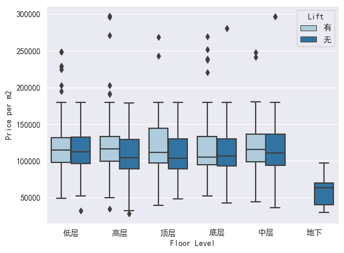
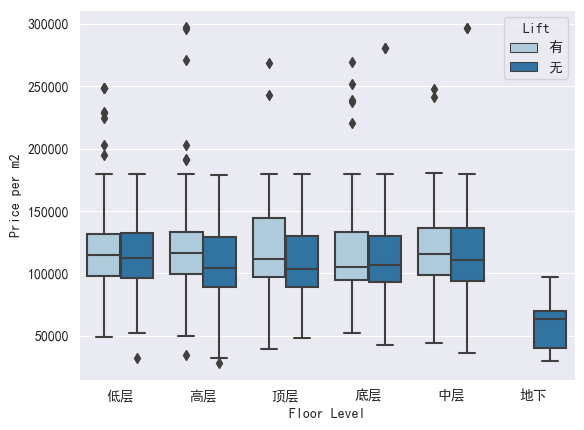

In this project, I did web scraping, scraping data from Fang.com, and collecting data on second-hand houses in Haidian District in Beijing, China
Here are the key points that I collected:
import numpy as np
import pandas as pd
import matplotlib.pyplot as plt
import seaborn as sns
import matplotlib.font_manager as fm
sns.set_style("darkgrid",{"font.sans-serif":['simhei', 'Arial']})
df = pd.read_csv('house_data_fix.csv')
raw_price_clean = df[df['Price'] != '暂无报价']
raw_price_clean['Area']=raw_price_clean['Area'].astype(float)
raw_price_clean['Price']=raw_price_clean['Price'].astype(float)
raw_price_clean['Price'].max()
raw_price_clean['Price'].mean()
plot1= sns.jointplot(x='Price',y='Area',data=raw_price_clean,kind='reg', joint_kws={'color':'Orange'})
plot1.ax_marg_y.set_ylim(0, 1000)
plot1.ax_marg_x.set_xlim(0, 15000)
Based on the data above, it can be seen that as the area increases, the price also generally increases. The average price of the houses in Haidian is 19.06 Million RMB, and the most expensive house costs 450 Million RMB As the area of each house is different, in the following analyses, using the Price/m2 will be a fairer comparison. Note that in the graph above, the limits of the x and y axis is set accordingly, as there are only a few data points outside this limit.
price_clean = df[df['Price per m2'] != '暂无价格']
price_clean['Price per m2'] = price_clean['Price per m2'].astype(float)
sns.boxplot(x="Furnishing", y="Price per m2", data=price_clean,palette='rainbow')

From the data above, it can be seen that a luxurious finishing (豪华装修) has the highest mean price per m2, and a semi-finished house (毛坯) has the lowest median price. The lowest mean price is a middle-furnished house(中装修) . This makes sense since the furniture such as beds, chairs and others are included in the price of the house, whereas a semi-finished house has no furnishings, and its construction may not be done.
sns.boxplot(x="Sun Direction", y="Price per m2", data=price_clean,palette='rainbow')

From the data above, it is inferred that the houses facing west are the least expensive on average. The houses facing east has the highest median value. This is because the sun rises in the east, meaning that east facing houses have access to the sun. The mode of the houses have both north and south facing windows, which also has the highest average.
lift_clean = df[(df['Lift']== '有')|(df['Lift']=='无')]
sns.countplot(x='Lift', data = lift_clean, palette = 'coolwarm')
sns.countplot(x="Floor Level", hue="Lift",data=lift_clean, palette="Set2")
sns.boxplot(x="Floor Level", y="Price per m2",data=price_clean,palette='rainbow')
lift_price = price_clean[(price_clean['Lift']== '有')|(price_clean['Lift']=='无')]
sns.boxplot(x="Floor Level", y="Price per m2", hue ='Lift',data=lift_price,palette='Paired')

 

It can be seen that in second-hand houses in Beijing, there are more houses without lift access than houses with lift access. Additionally, all types of floor levels have more houses which have no lifts. Houses that have access to lifts are generally more expensive. The most number of houses being sold is houses in the middle floors. In the other hand, the least number of houses sold is the basement houses. This is because basement-level houses have no access to the sun. Consequently, this makes the basement houses the cheapest, while the most expensive houses on average is the ones on the top floor (顶层). The most expensive median is low floors (低层)
1. The larger the house, the more expensive the price.
2. Furnishing affects the price/m2 of a house as the more furnishings a house has, the more expensive it will get.
3. Sun access also affects the price, where north-south facing windows and east facing windows are more favored.
4. Floor level and lift access affects the price, as higher floors are more expensive than basement floors. Houses with lifts are also more expensive than those without.